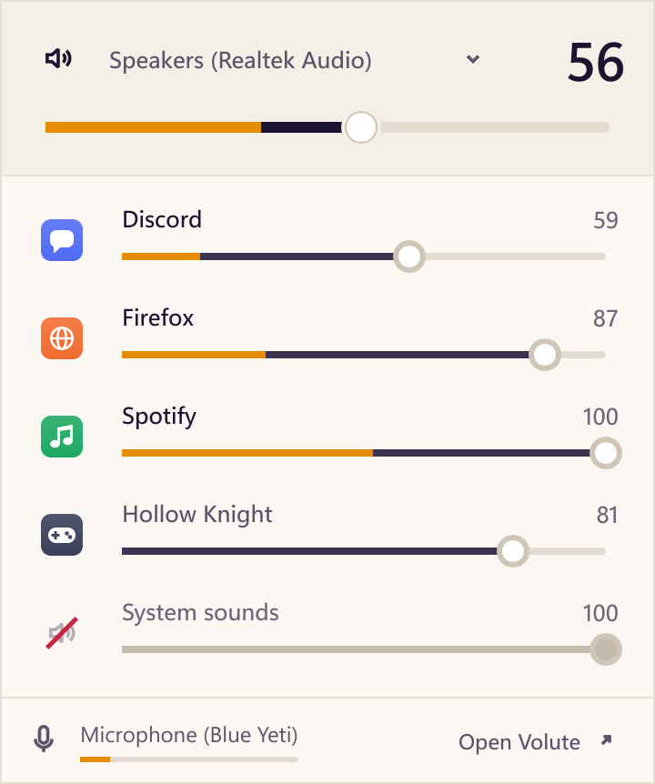
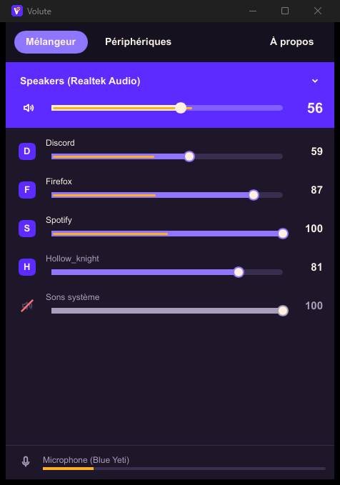
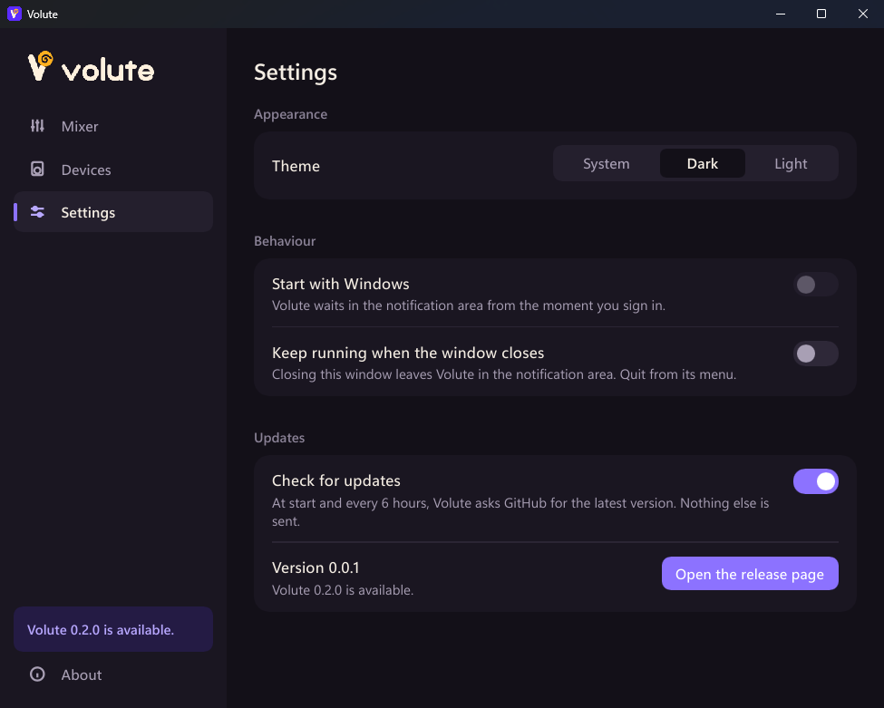

Même démo (--mock). À gauche M1, à droite le 25 octobre : surfaces neutres au repos, le niveau en ambre dans le remplissage, le violet seulement pour Volute qui parle.
AvantBandeau violet saturé, faders violets au repos, pastilles d'initiales.AprèsCalme au repos, le son en ambre, une vraie hiérarchie.Après, clair

Le même en thème clair.
Avant

Onglets en pilule, texte minuscule, « À propos » dans une autre fenêtre.AprèsUn rail, quatre vues, la sortie principale comme un instrument.Nouveau

Réglages : thème, démarrage, fermeture, mises à jour.